Simulation Architecture for Strawberry Harvesting End Effectors
Pick the strawberry.
The problem
Strawberry harvesting is labor intensive, repetitive, and time sensitive, but hard to automate. Ripe fruit has to be found, reached through foliage, detached, and handled without bruising. One approach that has reached industry grasps and cuts the pedicel (the stem). It demands vision that can find a 2 mm green stem against green leaves, plus precise approach paths, and it is largely limited to tabletop growing. One system is reported at about £30,000 plus a recurring subscription, which is hard to justify economically.
I wanted to explore a simpler "grab-around" strategy inspired by how people pick: the hand forms a loose cage around the berry so the pedicel slides between the fingers and nothing compresses the fruit. Pulling then tightens the pedicel, lines the berry up with the pull, and loads the natural abscission zone where the fruit is designed to separate.
Physical testing alone is slow and expensive, since every new end effector, stem, and sensor needs fabricating. So I built a simulation as an intermediate design filter. It does not replace testing on real strawberries. It narrows down which ideas are worth building.
Simulation architecture
Four configurable subsystems make up the testbed. The same scene can be re-run across fruit positions, stem parameters, detachment thresholds, and end-effector designs.
1. Realistic crop environment
The scene models a raised-bed plasticulture field, a common commercial setup in California, which produces roughly 90% of U.S. fresh strawberries. Bed dimensions follow published plasticulture guides (about 8 to 10 in high and 28 to 30 in wide at the base). Bed height, leaf occlusion, and berry orientation all shape how a robot can approach the fruit, so they matter for more than looks. The same environment can later support camera-based detection and path planning.
2. Semi-deformable stem
A rigid stem would not swing or transmit force the way a real pedicel does. The stem is instead a chain of short rigid links joined by ball joints with configurable spring and damping behavior. Link count, length, diameter, joint range, stiffness, and damping can all be changed without rebuilding the model, trading simulation speed against fidelity.
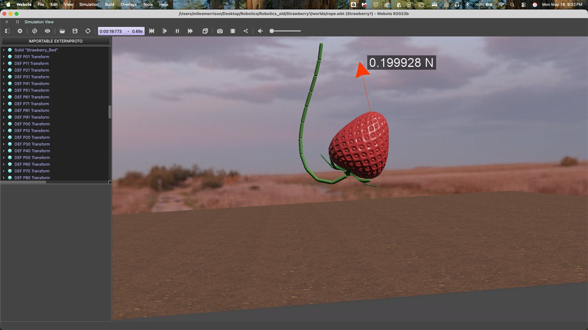
3. Connector-based fruit abscission
A Webots Connector holds the fruit to the end of the stem until a configurable tensile or shear threshold is exceeded. That approximates detachment without a tissue-fracture model. Placing a connector between every stem segment would let failure happen at the weakest point instead of a fixed location.
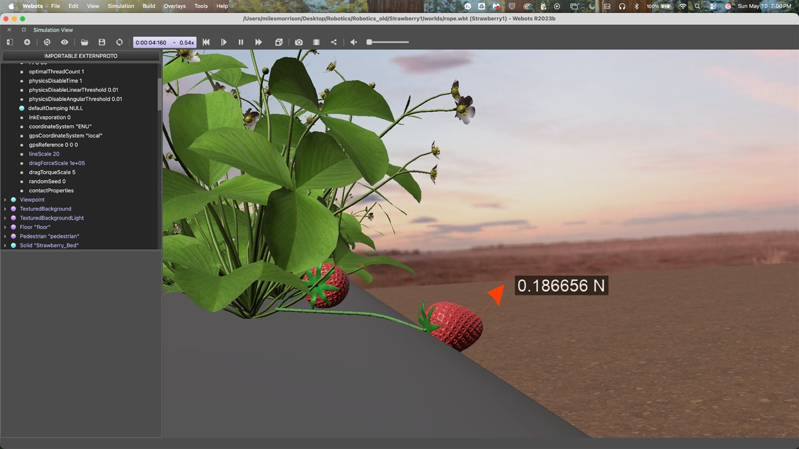
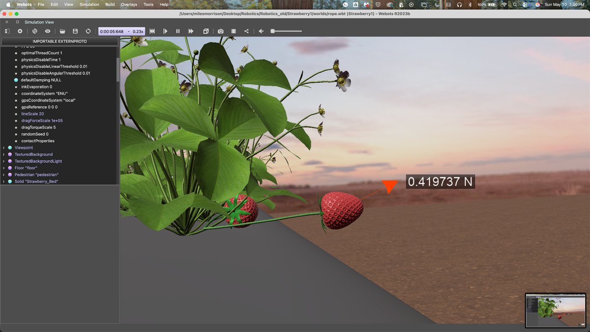
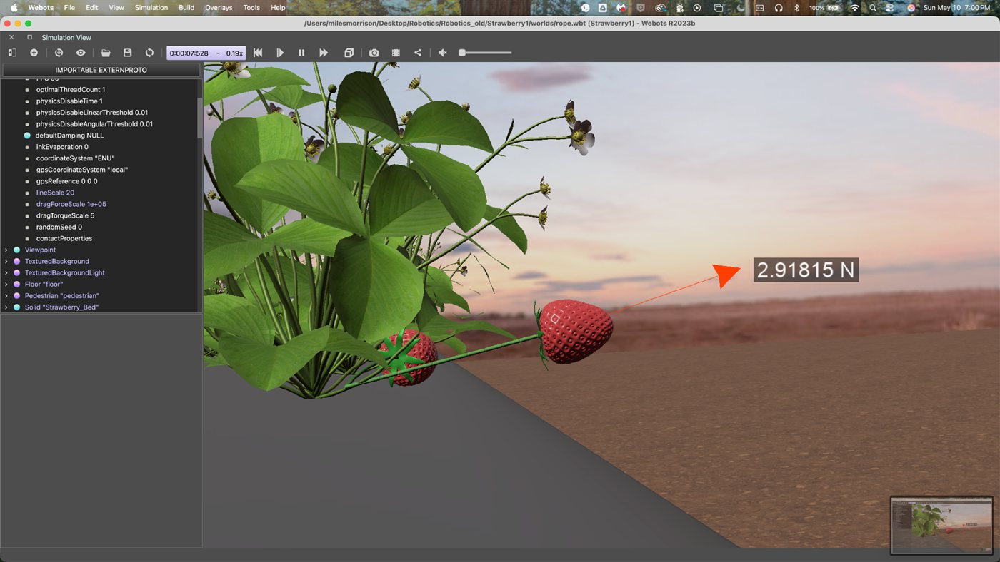
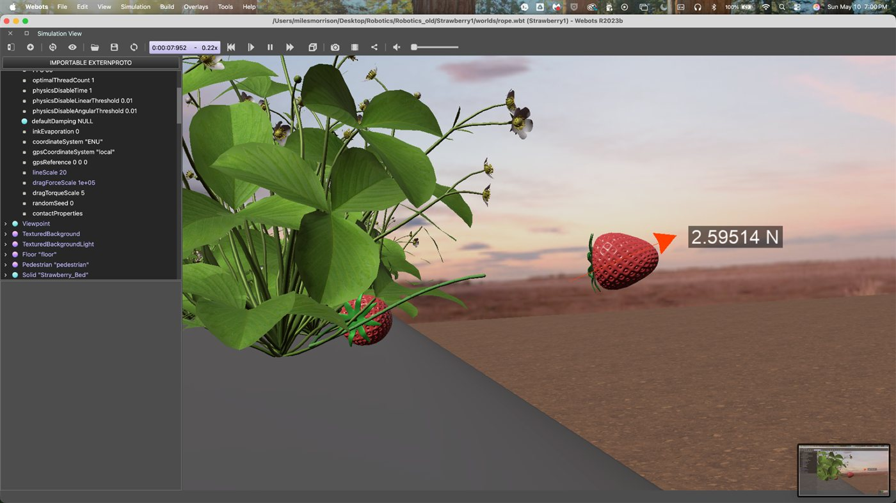
The stem goes taut under a pulling load, and the fruit detaches once the load exceeds the connector's failure threshold.
4. Distributed force-sensing strawberry
The berry carries 100 force sensors spread around its surface, each recording a 3D force vector at a known location. Sensor count, spacing, offset, size, and contact material are configurable, so sensing can be concentrated where an end effector will touch, such as around the calyx for a grab-around design. Force data is visualized as 3D force maps and force-time plots, so you can see where, when, and how hard a berry is contacted, not just whether the pick succeeded.
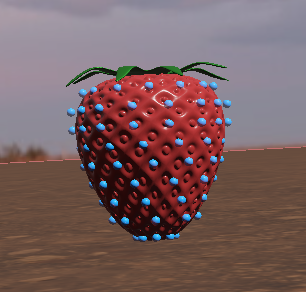
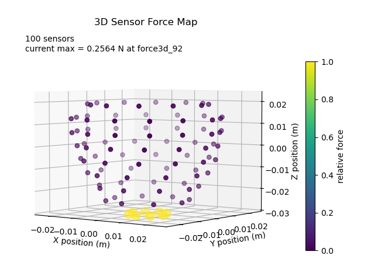
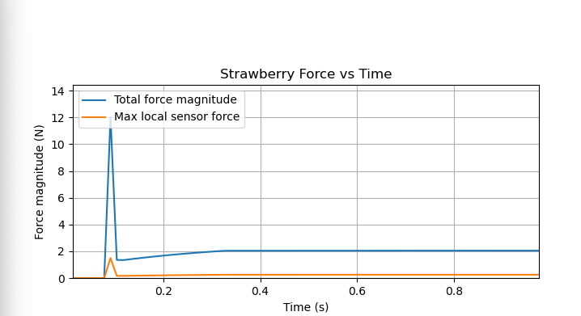
Showing the model is tunable
I ran two parameter sweeps, changing one parameter at a time on a fixed geometry. The goal was not biological accuracy. It was to confirm the model responds predictably to stiffness and damping, so it can later be fitted to measured plant behavior. A fruit-stem system is a coupled multi-body spring-damper system, so settling time depends on mass, geometry, stiffness, damping, and more, not on damping alone.
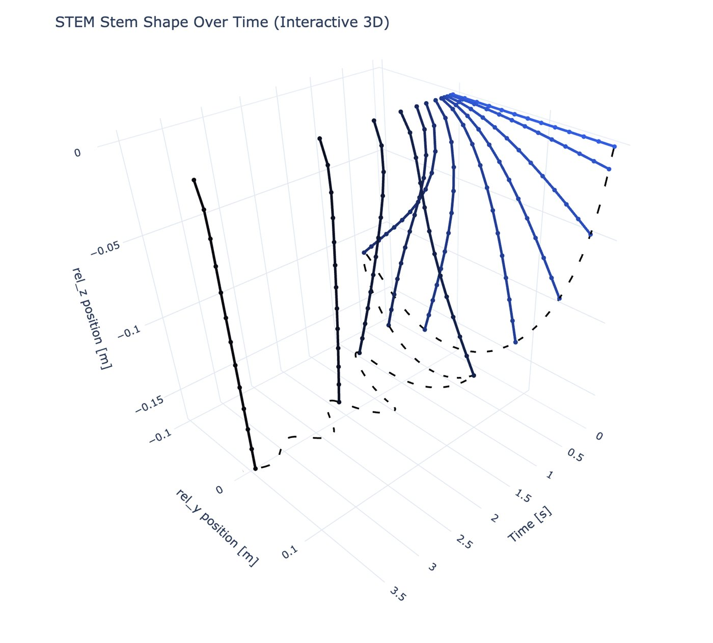
Damping sweep (stiffness k = 0.005)
Low damping gave large, sustained oscillations after the fruit dropped under gravity. Higher damping shortened them, while the final resting displacement stayed near -0.163 m in every case.
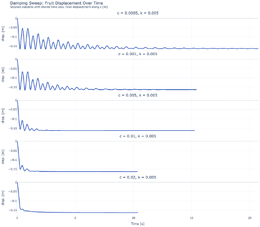
| Damping c | Final disp. (m) | Post-1 s peak-to-peak (m) | 5 mm settling time (s) |
|---|---|---|---|
| 0.0005 | -0.1632 | 0.0891 | 11.92 |
| 0.001 | -0.1631 | 0.0710 | 6.86 |
| 0.005 | -0.1631 | 0.0121 | 1.79 |
| 0.01 | -0.1631 | 0.0057 | 1.02 |
| 0.02 | -0.1629 | 0.0076 | 1.31 |
Stiffness sweep (damping c = 0.002)
Stiffness changed where the fruit rests. Going from k = 0.0005 to k = 0.05 moved the final displacement from about -0.1677 m to -0.1411 m, a 26.6 mm reduction in sag. The dynamic response changed too, which means stiffness and damping have to be tuned together.
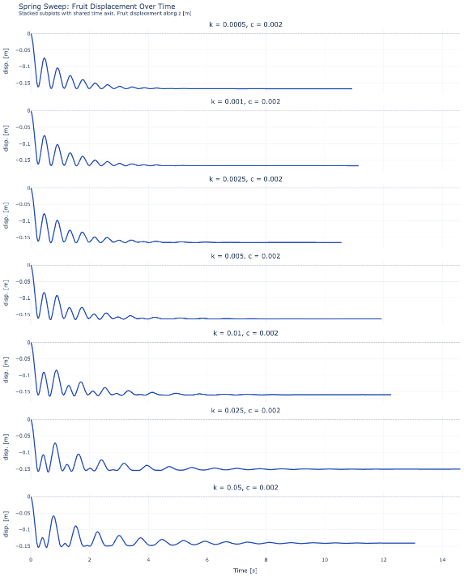
| Stiffness k | Final disp. (m) | Post-1 s peak-to-peak (m) | 5 mm settling time (s) |
|---|---|---|---|
| 0.0005 | -0.1677 | 0.0419 | 3.50 |
| 0.001 | -0.1672 | 0.0422 | 3.51 |
| 0.0025 | -0.1656 | 0.0428 | 3.52 |
| 0.005 | -0.1631 | 0.0420 | 4.24 |
| 0.01 | -0.1592 | 0.0429 | 4.23 |
| 0.025 | -0.1510 | 0.0526 | 5.54 |
| 0.05 | -0.1411 | 0.0632 | 5.99 |
Why it matters
- More meaningful end-effector tests. A cage-style gripper can look fine on a stationary berry and fail when the berry swings away. Tuning stem behavior lets one design be tested across a range of plausible plants.
- Simpler, cheaper robots. If a simple mechanism detaches berries with acceptable force across plausible stem parameters, it earns physical development. If it fails, the failure mode shows up before any fabrication cost.
Limitations and next steps
- The stem is rigid links with spring-damper joints, not continuous tissue, and abscission is a threshold approximation. The sensors measure local force but do not model bruising or tissue failure.
- Next is calibration: measure real stem displacement, damping, and detachment force, fit the simulated constants to them, and relate force readings to physical damage risk.
- After that, compare cage-style, suction, cutting, twisting, angled-pull, and gripping end effectors on shared metrics: detachment success, peak and total force, force distribution, cycle time, and sensitivity to stem parameters and berry orientation.